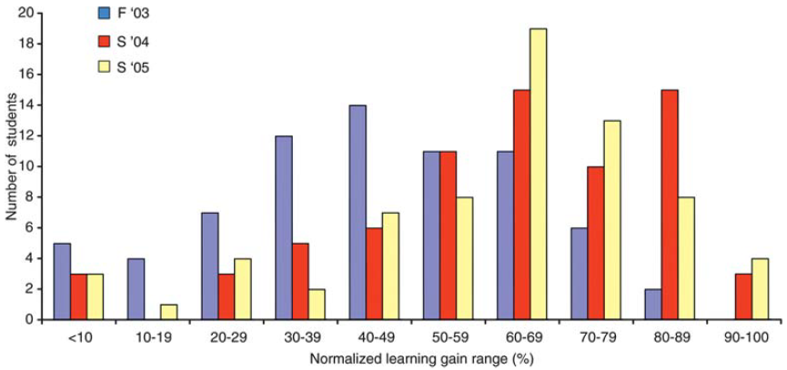
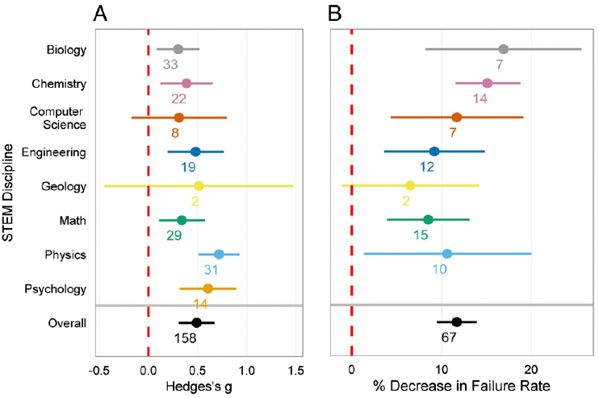
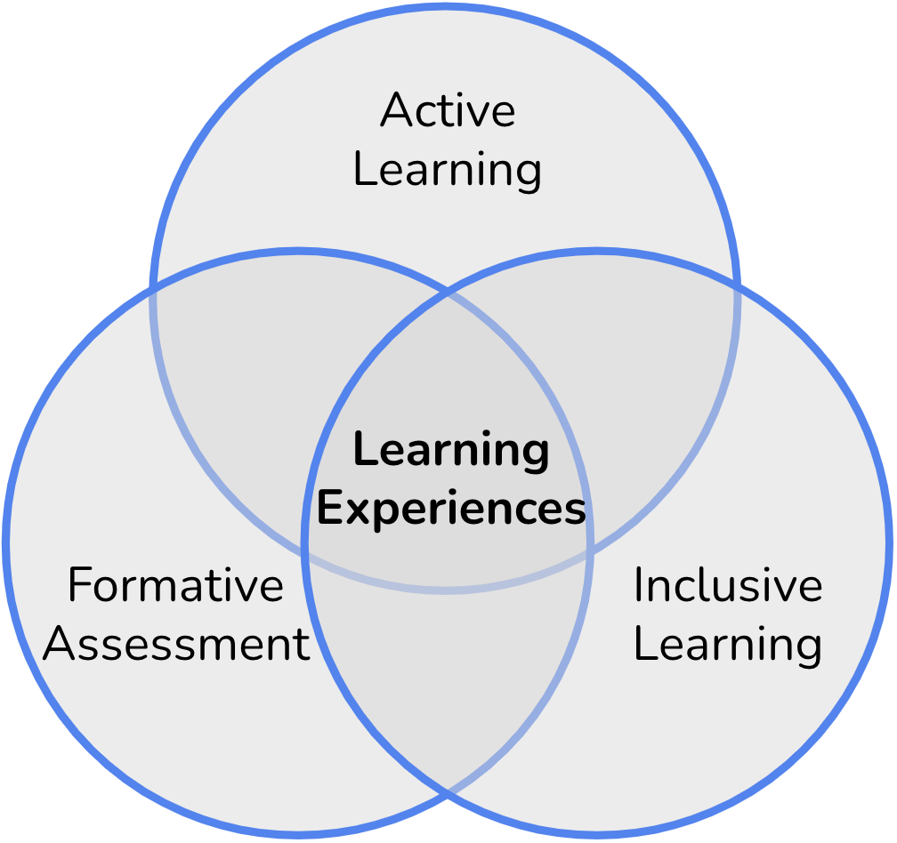

Learning Experiences
This site is still under development. Thank you for previewing it! Your feedback is much appreciated – Let us know what you think!
TODO: (1) insert vignette videos from Sarah K, (2) write LOs, (3) revise summary, (4) reorganize/ revise all sections... less theory and more doing
Module Learning Objectives
By the end of this module, you will be able to...
- Compare the types of student engagement (interactive, constructive, active, and passive) and how you plan to incorporate them.
- Explain the difference between student-centered and instructor-centered approaches.
- Identify the active learning approaches you are most interested in incorporating.
- Intentionally design learning experiences that include active learning, formative assessment, and inclusive learning.
Learning Experiences Defined
Learning experiences encompass all the opportunities students have to engage in learning science plus the factors that influence those opportunities. They leverage what we know about how learning works to appropriately scaffold learning.
Learning experiences manifest curricular intentions and bring science to life. They feature all the activities—active learning plus assessment opportunities—that occur during a course, plus the inclusive learning considerations that support them: from assignments to assessments, experiments to exams, interactions to inquiries, questions to quizzes. They include activities during a prescribed classroom period (such as a lecture or lab/field) and outside the classroom (such as a pre-class reading/quiz in a learning management system or a post-class homework assignment).
In short: Learning experiences manifest curricular intentions and bring science to life. Learning experiences = active learning + assessment + inclusive learning
Active Learning Defined
At their core, learning experiences involve active learning. However, given its long history, there is not a single, consistently used definition of active learning in education literature.
So, before we delve into the whys and hows of adopting an active learning approach, let’s start by developing your personal working definition of this concept: What does active learning mean to you?
Define Active Learning
How do you define active learning? Write this down before revealing published examples below.
Click to show published examples
- “...instructional activities involving students in doing things and thinking about what they are doing.” (Bonwell & Eison, 1991)
- “Active learning simply means getting involved with the information presented - really thinking about it (analyzing, synthesizing, evaluating) rather than just passively receiving it and memorizing it.” (King, 1993)
- “Active learning implies that students are engaged in their own learning. Active teaching strategies have students do something other than take notes or follow directions, placing the responsibility for learning squarely on their shoulders. As they participate in activities that involve group learning, problem solving, or inquiry-based learning, students construct new knowledge and build new scientific skills.” (Handelsman et al., 2007)
- “Active learning engages students in the process of learning through activities and/or discussions in class, as opposed to passively listening to an expert.” (Freeman et al. 2014)
How were the published definitions similar to or different from your definition?
Were the differences surprising or enlightening?
Rethink your working definition of active learning to include any new insights or nuances that you have gained.
Active learning + assessment
One goal of the previous reflection activity was to highlight that while active learning is a broad concept that encompasses a variety of techniques, a common feature of any definition is that students are cognitively engaged in something. “It may be quietly thinking, discussing an idea in a group, conducting an experiment, solving a problem, or writing a question or idea” (Handelsman et al., 2007). The key is to engage students so that they are constructing knowledge.
This engagement highlights where active learning converges with assessment. The act of performing a task provides feedback to the individual, enabling them to gauge their progress and adjust their approach accordingly.
For example, when asked to interpret a graph as part of a learning activity, students reveal to themselves and their instructors their ability to extract and analyze information, allowing students to make real-time adjustments. Likewise, “assessment is automatically active because the students must do something to assess themselves or be assessed” (Handelsman et al., 2007).
As such, the relationship between active learning and assessment is nearly inseparable. This is particularly true for formative assessment which occurs during the learning cycle and enables continuous improvement through feedback.
Formative Assessment Defined
Ongoing feedback is one of the most reliable ways to foster learning gains (Black & Wiliam, 1998). Formative assessment is defined as the suite of ongoing activities that enable students and instructors to monitor progress toward learning objectives, providing a mechanism for continuous improvement.
Formative assessment builds on active learning and connects directly to learning principles: as students apply new knowledge and practice new skills, they have the opportunity to think critically about their progress toward understanding and competency. In other words, formative assessment encourages students to think metacognitively.
Formative assessment provides a unique opportunity for feedback, which can take various forms. This may include self-assessment using a rubric, peer review with guidelines for constructive feedback, or instructor-led commentary. Importantly, formative assessment is not necessarily tied to grading, allowing students to focus on the process of learning rather than simply the outcome.
Reflect: Formative Assessment
Where does your current course use formative assessment?
Why Learning Experiences
Move the Show Me the Data and Modes of Engagement sections to ST module? Or cut down?
While we know that students can learn through passive listening, research has consistently shown that active, cognitive engagement with a concept or skill yields much more significant and lasting learning outcomes.
Show Me the Data
Decades of studies have demonstrated the superiority of active over passive learning approaches in promoting student learning and persistence. An example of this type of study was carried out by early leaders in the Scientific Teaching movement, Drs. Jenny Knight and Bill Wood (2005). By implementing polling questions that challenged students to think critically and solve problems collaboratively, they demonstrated improved learning gains (Figure 3, Fall ‘03 vs Spring ‘04). Notably, the study also showed that the learning gains were incremental: students’ learning gains improved further as they included more polling questions (Figure 3, Spring ‘04 vs Spring ‘05).
This suggests that there is no magical threshold of active learning necessary to improve student understanding, but rather the more students are challenged to engage in high-level cognitive tasks, the more they learn.

This interpretation is supported by numerous recent studies, including one that surveyed nearly 1000 students in classes taught by educators trained in evidence-based teaching practices through the Summer Institutes on Scientific Teaching (Reeves et al., 2024). The study found that students who experienced active learning more often reported higher learning and improvement in collaborative skills.
A seminal metastudy by Freeman and colleagues (2014) synthesized the findings of over 200 active learning studies, shedding light on the effectiveness of active learning across various STEM disciplines. They found that students in active learning courses consistently outperformed and failed less, on average, compared to peers in passive learning classes (Figure 2). This figure shows effect sizes (a value measuring the strength of the experimental effect; Hedge’s g in figure) for performance on assessments and the percentage decrease in failure rates. Overall, students in active learning classes performed half a standard deviation higher than those in passive classes and had an average failure rate that was 10% lower than that of passive classes.
The stark contrast between active and passive learning classes is evident when examining the failure rates. While active learning classes had an average failure rate of around 20%, passive classes averaged a rate just under 35%. This represents a substantial 55% increase in failure rates for passive classes.

A more recent metastudy by Theobald and colleagues (2020) examined the impact of active learning on achievement gaps for students from historically excluded groups. The study found that active learning classes reduced achievement gaps for assessment scores by 33% and reduced gaps in failure rates by 45%. These findings underscore the importance of active learning in promoting equity in STEM education.
Reflect: Arguments for Active Learning
The literature on active learning argues that its implementation leads to improved learning gains, better performance and lower failure rates, and reduced achievement gaps.
Reflect on the following three arguments. Which do you think would most persuade your colleagues and why? How would you strengthen the argument?
- Active learning strategies are designed to engage students in the learning process and make it more relevant and meaningful to their lives. By giving students a sense of autonomy and ownership over their learning, active learning can increase student motivation and enthusiasm, leading to improved learning outcomes.
- When students are actively involved in the learning process, they are more likely to retain and transfer the knowledge they gain to new contexts. This is because active learning helps students connect new information to their existing knowledge and experiences, making it more meaningful and memorable.
- Active learning helps close the achievement gap for students who have been historically excluded from science. By providing opportunities for students to work together, share their experiences, and learn from each other, active learning can help create a more inclusive and equitable learning environment.
Modes of student engagement
Given that active learning is defined broadly, it is useful to categorize learning activities by mode of engagement.
The ICAP framework is one tool that categorizes engagement in four modes: interactive, constructive, active, and passive (Chi and Wylie, 2014). Each mode is defined by the level of cognitive demand and type of learning activity. Additionally, the ICAP framework suggests that higher levels of engagement (constructive and interactive) lead to better learning outcomes than lower levels (passive and active) because they involve more complex cognitive processing.
- Interactive: Learners engage in social discourse and co-construct knowledge.
- Constructive: Goes beyond simple participation and involves learners actively generating their own understanding of the material.
- Active: Learners participate in some form of hands-on activity or engage in a task.
- Passive: Learners are recipients of information without actively participating in the learning process.
ICAP Matching
Match each of the following activity descriptions with the appropriate ICAP category: Interactive, Constructive, Active, or Passive.
- Completing worksheets, solving problems, or participating in discussions where students are processing and applying the information they are learning.
- Group discussions, collaborative projects, or peer teaching where students interact with each other to share ideas, perspectives, and feedback, fostering deeper understanding.
- Listening to lectures, watching demonstrations, or reading instructional materials.
- Generating explanations, creating concept maps, or engaging in problem-solving tasks where students are encouraged to synthesize and integrate new information with their existing knowledge.
Based on the above descriptions, which category of activities do you currently use most often in your classes?
How can you incorporate more opportunities for higher levels of cognitive engagement (i.e., Interactive and Constructive)?
Goals of learning experiences
The “doing something” nature of active learning makes it more student-centered than passive lecturing. However, not all active learning exercises have the same level of student-centeredness.
While active learning and formative assessment are nearly inseparable, some activities provide more apparent and/or useful feedback than others. Learning activities become more student-centered as more and clearer feedback is provided to both the students and instructor.
In essence, the results of the activity allow the instructor to “see” what’s going on in the students’ heads (e.g., what is their prior knowledge, where are they in the learning cycle). By revealing this information, the instructor can more effectively tailor next steps to the students’ needs rather than following a pre-scripted order of activities.
Identify Student-Centeredness
Let’s practice identifying student-centeredness in learning activities. Compare the activities below. Which is more student-centered? Why?
- Activity A: Students answer a polling question individually. The answers are split roughly equally across the four choices. The professor shows the answer bar chart and identifies the correct answer and provides rationale for the right and wrong answers.
- Activity B: Students answer a polling question individually. The answers are split roughly equally across the four choices. The professor tells the students that answers are split and asks them to discuss the rationale for their answers. The instructor then repolls the class. The answers have shifted more toward the correct answer. The professor then asks for volunteers to provide rationale for why the right answer is right and the wrong answers are wrong.
Reflect: Active Learning and Formative Assessment
What examples of active learning as formative assessment have you used in your classes?
How can you make your learning activities more student-centered by increasing the transparency of the feedback provided?
A Framework for Learning Experiences
Active learning, formative assessment, and inclusive learning form a framework for learning experiences that is designed to enhance engagement and learning for all students.

In this framework, active learning provides the foundation for engaging students in meaningful activities, while formative assessment provides feedback and guidance to help students stay on track. Inclusive learning practices help to ensure that all students feel welcome and supported in the learning environment, which can help to promote students’ ability to engage in the learning experiences.
Learning Experiences in Practice
Delete T-P-S is Active, Formative, Inclusive, and Helps Students Learn? Or cut down?
In the previous section, we identified that effective learning experiences are made up of three components: active learning, formative assessment, and inclusive learning.
Additionally, it’s important to design learning experiences that model the framework for how learning works. Students need to activate prior knowledge, contend with dissonant information, organize and build new knowledge, perform repetitive, targeted practice, and reflect on their learning.
Let’s look at one type of learning experience as a detailed example of how a learning experience can leverage these two frameworks: think-pair-share.
Think-Pair-Share is Active
A paper in Science talks about the efficacy of a large-enrollment physics class in which students engage in repeated think-pair-shares implemented with clickers for the entire 50 minutes (DesLauriers et al. 2011). In a think-pair-share, the instructor asks students to think through a challenge, discuss their answers with neighbors, and then entertain a whole class conversation about the problem. The instructor uses student feedback to determine how much whole class discussion and mini-lecture to share to clarify students’ thinking.
A think-pair-share is an Active Learning strategy since students are actively engaged in various cognitive processes and collaborative learning. During the “think” phase, individual reflection encourages critical thinking and analysis. In the “pair” phase, students exchange ideas and perspectives, which deepens understanding of the concepts and improves communication skills. In the “share” phase, insights are shared with the whole class. This further enhances participation and engagement as well as reinforces learning by providing different viewpoints and perspectives.
Think-Pair-Share is Formative
This example illustrates both active learning and data collection to create a Formative Assessment.
When you teach, you design an activity that you hypothesize will teach certain content and/or skills. Subsequently, the data generated from these activities, such as student responses, performance, and engagement, become valuable indicators for assessing the effectiveness of the teaching method. This formative assessment data helps determine whether to accept the hypothesis about what the students learned.
In essence, the activity serves as a mechanism for actively engaging students in the learning process, while the formative assessment acts as a tool for interpreting the data gathered from the activity.
Think-Pair-Share is Inclusive
Think-pair-share can also engage students in Inclusive Learning.
When you pose a problem, you give students time to think about it, and even write out their answers. And when you pair them up, they practice explaining their thinking, which prepares them for sharing responses with the class. However, sharing with the whole class can be overwhelmingly for some students.
To make the sharing step more just, you can survey the class early in the term to find out who is willing to share their thoughts with the class, and who prefers not to (Cooper et al. 2021).
To make sharing equitable, you can randomize the list of students who you call on. Invite them to share in a way that makes it clear you’re opening up the conversation, rather than looking for a particular answer on the first try (Waugh and Andrews 2020). For example, asking “Can you get us started with an answer?” is a great way to begin the class conversation.
Using these equitable approaches to hear from students is a powerful way to sample the classroom to assess understanding. A technique like volunteer call biases the feedback you receive toward the students who are confident they have correct answers. Hearing from a random sample of students gives you a more accurate sense of how the class is solving problems. It also models for students different ways to approach problem solving. Finally, it avoids the tendency of volunteers to become class celebrities who become the only speakers and to which other students defer, even when they are incorrect (Theobald et al. 2017).
Think-Pair-Share Helps Students Learn
Lastly, let’s look at how think-pair-shares map onto our framework for how people learn:
- Activate prior knowledge: During the “think” phase, students reflect on their prior knowledge and experiences. This activates their existing knowledge and helps them to make connections to what they already know. Even if their prior knowledge is incomplete or inaccurate, students can identify and question their own understanding.
- Recognize dissonance: As students share their thoughts with their partner, they may encounter conflicting ideas that challenge their existing understanding. Peer-to-peer dialogue allows students to discuss and reconcile any differences in their understanding.
- Construct new knowledge: Throughout the think-pair-share activity, students are integrating new information with their existing knowledge, forming new connections between ideas, and developing a deeper understanding of the topic. Knowledge construction is reinforced through the social interaction and feedback provided by their partner.
- Practice and apply knowledge: Throughout the think-pair-share activity, students are sharing their thoughts and ideas, engaging in a collaborative conversation, receiving feedback, and responding to questions.
- Reflect and evaluate: During the “share” phase, students reflect on what they have learned, identify any gaps or areas for further learning, receive feedback from others, and adjust their understanding accordingly.
Connecting Learning Experiences with Science Practice
To encourage students to think and act like scientists, learning experiences should have alignment with the six facets of science. This can be achieved by incorporating elements of these facets into existing activities. Below are some strategies to enhance engagement with each facet of science:
- Science Practices: Add prompts that encourage students to ask scientific questions. For example, include an exit ticket prompt such as, "Write down one question you have about osmosis."
- Iteration: Provide additional opportunities for students to test their knowledge/ receive feedback. For example, use a clicker question in two rounds: students first answer individually, then discuss in pairs or small groups, and finally, vote again.
- Discovery: Add prompts that have students explore new information or complete research tasks. For example, ask students to research a current event related to course concepts and present their findings in small groups.
- Authenticity: Integrate additional opportunities for collaboration. For example, allow students to work together on assignments typically completed individually or implement two-stage testing in which students individually first complete and turn in their exam and then work in small groups to answer the exam questions again.
- Ownership: Incorporate self-reflection prompts that ask students to connect the material to their own experiences. For example, have students complete a one-minute write on something they learned in the course unit that resonated with them personally.
- Relevance: Add prompts that have students apply their learning to contemporary issues. For example, after learning about how vaccines work, engage students in a discussion about the ethics of mandatory vaccination.
One Example: CUREs
Course-based Undergraduate Research Experiences (CUREs) increase:
- Research skills and project ownership
- Confidence, self-efficacy, and belonging in STEM
- Retention in STEM
CUREs normalize failure by:
- Teaching about scientific failures
- Showing how to troubleshoot experiments
- Creating opportunities to share personal failures with colleagues
Just one CURE in college can increase persistence in STEM.
Commit to Action: Engage the Facets of Science
Answer in your workbook: Even if you don’t teach a CURE, what is one concrete action you can commit to taking to ensure students engage with the facets of science?
Beyond Think-Pair-Share
Passive to active tables? Keep list of techniques but delete definitions and link out to "glossary" of techniques? Formative strategies? Refreshers on how to design LEs to be inclusive?
Next, we share different active learning techniques and explain how to use them in the classroom.
While active learning techniques are formative assessments for students, not all techniques include an explicit formative component for the instructor. In other words, some techniques don’t explicitly involve sharing out to the instructor–some share out to a peer or are more self-reflective.
As you review these strategies, think about how each technique actively engages students and provides feedback to the students (and to the instructor). Also consider how formative assessment strategies can be used in isolation or paired with an active learning technique.
As a scientific instructor, choosing active learning techniques that help you gather information will help you evaluate where students are in their learning and how you may need to adjust your teaching. Additionally, strategies that gather information can serve as excellent no-grade or low-stakes assessments for students.
- Random call: Randomly select students to participate in activities, answer questions, or share their thoughts. This can be done in various ways: create a roster that lists students’ names in a random order, pick names from a bucket, distribute tokens such as playing cards and randomly draw cards.
- One-minute writes: Prompt students to reflect, think critically, or brainstorm. Provide a question or prompt and give students one-minute to write their response. These can be collected as “exit tickets.”
- Jigsaw: Divide students into small groups and assign each group a topic or text. Each group member becomes an “expert” on a specific part of the topic. Students are then re-distributed into groups in which each expert shares their knowledge with other group members.
- Group problem solving: Assign a problem or scenario, and have students work in pairs or small groups. Each group then shares their findings with the class. Be sure to vary how groups are called upon.
- Electronic audience response systems: Ask students to respond to questions or polls using a “clicker” or their personal devices. Display the results in real-time, which allows students to see their peers’ answers, and facilitate discussion and reflection.
- Strip sequence: Provide the steps (written, pictorially, or both) to a process on strips of paper that are jumbled. Then have students put the strips in chronological order.
- Decision making: Students take on the role as policy-makers and are presented with a scenario or problem. They must gather information, think critically about their options, and develop a creative solution.
- Concept mapping: Start with a central idea or concept and have students generate related ideas, words, and phrases. Use arrows with short descriptions to connect concepts, creating a visual web of relationships.
- Case-based learning: Present an open-ended, real-world situation that requires critical thinking and problem-solving. Students make a decision based on the case description and their prior knowledge. Ask students to think beyond the context of the case and consider the broader impacts of their decisions.
- Problem-based learning: Present a complex and real-life question that has a specific goal. Students work in teams to assess the problem, research more information, and devise a solution.
- Exit tickets: A catch-all term for students turning in something before leaving class. These can include:
- Completing a brief questionnaire about what they learned and found most confusing.
- Submitting work from an in-class activity such as drawings, concept maps, or short writings.
- Self-reflection/ Journaling: Students keep a journal of their learning, reflecting on what they’ve learned and what they need to work on.
- Discussion forums: Students participate in an online discussion forum/ board on the class learning management platform. Students take turns posing questions and responding to posts.
- Quizzes: Students complete short, frequent assessments that can gauge prior knowledge, preparedness for class, or understanding of the week’s lessons.
Designing Learning Experiences
Examine the active learning techniques listed in the section above. Pick a technique that is of interest to you, and design a learning experience around it.
Include:
- How it will provide feedback to the students
- How it will provide feedback to the instructor
- How you will make it inclusive
- How it actively engages students in their learning (think about the steps of learning)
Designing Learning Experiences
Answer in your workbook: Use one of the following three prompts to a brainstorm a learning experience for your own course:
Prompt 1: Discussing Data
Describe a text that you use that discusses data (e.g., primary or popular article, book chapter, video).
What open-ended question can you ask to assess students’ ability to think about the scientific practices that led to the results presented?
What would students gain from discussion in pairs and with the whole class?
What question could you ask students at the end of class to help you prepare for the next class meeting?
Prompt 2: Jigsawing Data
Describe a text that you use that discusses data (e.g., primary or popular article, book chapter, video).
How could you use the data to form three complementary expert groups in a jigsaw?
What questions could you ask students that require them to pull from data across the three groups?
Prompt 3: Learning Objective Questions
Choose a learning objective for one of your classes.
Write two questions that assess students’ progress toward meeting that objective. Have one of the questions address a lower order of cognition, and one address a higher order.
How would you use these in a think-pair-share?
What variety of answers would you expect?
How/why is posing these questions student-centered?
Summary of Learning Experiences
- Learning experiences refers to all in- and out-of-class activities that cognitively engage students with the course content and skills in an inclusive manner.
- While there is no single, consistent definition, active learning involves students engaging in activities that promote cognitive engagement.
- Learning experiences should be student-centered, provide feedback, and allow for real-time adjustments.
- Active learning approaches lead to improved student learning and persistence, as well as increased learning gains and collaborative skills.
- The more students are challenged to engage in high-level cognitive activities, the more they understand and improve.